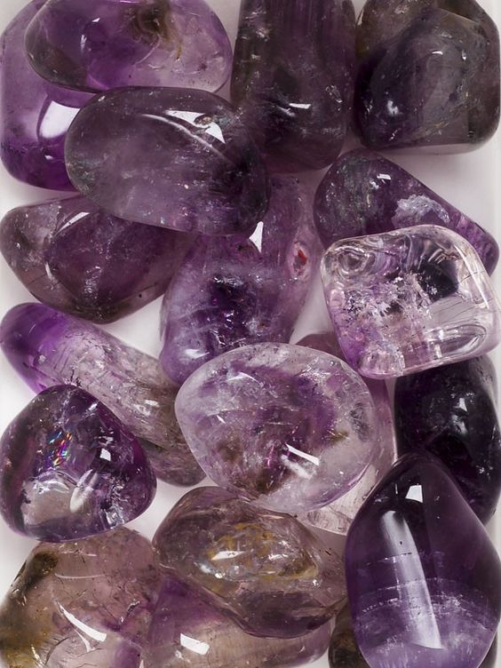
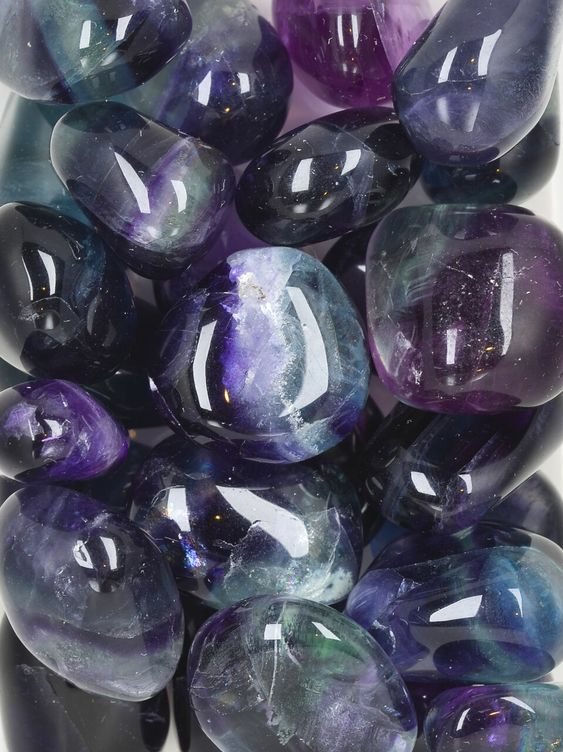

Ásványlexikon
Rózsakvarc
Szó szerint, régen szerelemvonzáshoz, kapcsolatok ápolásához használták és az egyik legjobb szív gyógyító. Gyengéddé teszi a nőket, de mégis igen határozottá. Ha viseljük, úgy érezzük nincs előttünk akadály, és bármire képesek vagyunk. A szeretet köve, megszabadít mindenfajta szívfájdalomtól, csalódástól, ki nem mondott érzelmektől. Fizikailag méregteleníti a szervezetet, serkenti a keringést, erősíti a szívet, stabilizálja a vérnyomást és jótékonyan hat a vesék működésére. Használat után, mindig meg kell tisztítani.
Malachit
A Malachit ásvány, az egyik legerősebb és legmisztikusabb kő. Minden kultúrában valamilyen istennőnek szentelték és a mennyország kövének számított. Bábakőnek is nevezik, a nők elsődleges ásványa, mivel szüléskönnyítő hatása van, és oldja a menstruációs panaszokat. Az egyiptomiak szerint tulajdonosának szerencsét és harmóniát hoz az életben és a párkapcsolatokban egyaránt. Fokozza a képzelőerőt, döntőképességet és javítja a kitartást. Erős védelmező kő, elnyeli a negatív energiákat a testből és a környezetből is.
Ametiszt
Az Ametiszt ásvány az egyik legerősebb és leghatékonyabb ásványunk, a 12 mesterkristály egyike. A koronacsakra köve. Az ametiszt javítja az agy koncentráció képességét, tisztítja a vért, kiegyenlíti a vérnyomást, oldja a vérrögöket és jótékony hatással van az érrendszeri problémákra. Általános fájdalomcsillapító hatása van, ezért kiváló migrénes fejfájásra és csökkenti a pszichológiai fájdalmakat is. Hatékonyan oldja a stresszt, és kiegyensúlyozottá teszi viselőjét. Alkalmazhatjuk duzzanatok, illetve bőrbetegségek kezelésére,

Jade
A Jade ásványt, már őseink is használták. Távol-Keleten szerencsehozó amulettként viselték, de már jól ismerték a vesére gyakorolt jótékony hatását is. A jade megnyugtatja a lelket, egyensúlyt teremt az energiaáramlásban, erősíti az idegrendszert, és elűzi a rossz közérzetet. Védelmet nyújt tulajdonosának az ártó szándékok, gondolatok ellen. Vonzza a szerencsét, a tisztaság és a nyugalom jelképe. Jótékony hatásai közé tartozik, hogy a párna alá helyezve, biztosítja a pihentető mély alvást. Fokozza a termékenységet, és terhesség közben, illetve utána is lehet viselni.
Fluorit
A Fluorit ásványt a 18. század óta ismerjük különálló ásványként. Nagyon hasznos védelmező kő. Feloldja a letapadt ízületeket, enyhíti az ízületi gyulladások okozta panaszokat. Tisztítja és stabilizálja az aurát, fejleszti az agyi funkciókat. Magabiztosságot kölcsönöz tulajdonosának. Tanulás segítő ásvány, rendszerezi az eddig megtanultakat, és növeli a figyelem-összpontosítását. Csökkenti a stresszt, megnyugtat és hatásosan blokkolja a geopatikus stresszt, illetve az elektromágneses szmogot is, ezért ha sokat dolgozunk számítógép előtt, tegyünk egy fluoritot az asztalunkra.

Akvamarin
Az Akvamarin rendkívül szép és nagyon erős gyógyhatású ásvány, a bátorság köve. Az akvamarinról ősi legendák szólnak, hogy hordozóját gazdaggá és boldoggá teszi. A hagyományok szerint segít megkülönböztetni az igazat a hazugságtól, a barátot, az ellenségtől. A torokcsakra köve, segíti a kommunikációnkat, önkifejezésünket. Az akvamarin enyhíti a szénanátha és az autoimmun-betegségek tüneteit és jótékonyan hat a szem problémákra. Enyhíti az érzelmi problémákat, a depressziót. Jótékony hatással van a pajzsmirigyre és szabályozza a hormonháztartást.